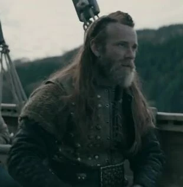

ERIK EL ROJO
Erik el Rojo: Explorador del Fin del Mundo
Erik el Rojo, conocido en nórdico antiguo como Eiríkr Þorvaldsson, fue un explorador y colono vikingo que pasó a la historia como el fundador de la primera colonia europea en Groenlandia. Su vida estuvo marcada por la aventura, el exilio, la violencia y la visión de llevar a los pueblos nórdicos hacia nuevas tierras en los límites del mundo conocido. Su apodo, “el Rojo”, se cree que hace referencia al color de su cabello y barba, típicamente rojizos, o tal vez a su temperamento fuerte y violento.
Nació alrededor del año 950 d.C. en la región de Jæren, en el suroeste de Noruega, hijo de un hombre llamado Thorvald Asvaldsson. La familia de Erik fue desterrada de Noruega debido a un crimen cometido por su padre, y como castigo se exiliaron en Islandia, una tierra que en ese entonces era el destino de muchos vikingos expulsados por conflictos políticos o delitos. Islandia ofrecía oportunidades, pero también era un lugar duro, aislado y propenso a disputas.
Siguiendo los pasos de su padre, Erik también tuvo problemas legales. Tras involucrarse en una serie de conflictos violentos y causar varias muertes —según las sagas, mató a dos hombres durante una disputa por tierras—, fue declarado fuera de la ley y condenado al exilio durante tres años por las autoridades islandesas.
Durante este exilio, Erik navegó hacia el oeste, más allá del mar conocido por los escandinavos, hacia una tierra de la que había oído rumores, probablemente de parte de navegantes como Gunnbjörn Ulfsson, quien había divisado tierras al oeste de Islandia años antes, pero no había llegado a colonizarlas. Erik organizó una expedición y logró alcanzar esa tierra, que posteriormente nombró "Groenlandia" (Grœnland), que significa “tierra verde”.
El nombre, según las sagas, fue un intento deliberado de atraer colonos: quería que sonara más atractivo de lo que realmente era. Aunque gran parte de Groenlandia está cubierta por hielo, sus costas del sur y suroeste ofrecían fiordos, pastos para ganado y posibilidades de asentamiento durante el verano.
Tras explorar y reconocer la tierra, Erik regresó a Islandia al término de su exilio. Allí, organizó una expedición mayor con 25 barcos y aproximadamente 500 colonos, compuestos por hombres, mujeres, ganado y provisiones. Solo 14 barcos lograron llegar, pero estos pioneros fundaron los primeros asentamientos europeos en Groenlandia, alrededor del año 985 d.C.
La colonia fundada por Erik fue conocida como Eystribyggð (Asentamiento del Este), que se convirtió en el principal centro de vida nórdica en Groenlandia. Había otro asentamiento más pequeño, conocido como el Asentamiento del Oeste. Desde allí, los colonos criaban ovejas y vacas, cultivaban cereales, pescaban y comerciaban con Islandia y Noruega, especialmente marfil de morsa y pieles.
Erik el Rojo se estableció como líder de la colonia y adquirió un estatus casi mítico. Según las sagas islandesas, nunca abandonó la fe pagana, incluso cuando el cristianismo empezó a llegar a Groenlandia a través de misioneros y comerciantes noruegos.
Su hijo, Leif Erikson, también sería una figura histórica clave. Inspirado por el espíritu aventurero de su padre, Leif exploraría tierras aún más lejanas al oeste y se convertiría en el primer europeo conocido en llegar a América del Norte, en una región que llamó Vinland (actual Terranova, Canadá), alrededor del año 1000 d.C.La historia de Erik el Rojo aparece en dos sagas principales: La Saga de Erik el Rojo y La Saga de los Groenlandeses. Ambas mezclan hechos históricos con elementos mitológicos, como era común en la tradición oral vikinga. Estas sagas no solo cuentan su historia, sino que son también una ventana a la vida, la mentalidad y la organización social de los pueblos nórdicos.
El legado de Erik el Rojo no es solo territorial, sino también cultural. Representa el arquetipo del colono vikingo: rudo, valiente, resistente y profundamente conectado con el mar. A diferencia de otros vikingos que saquearon tierras ajenas, Erik se destacó como pionero y organizador de un nuevo mundo. Su colonia fue uno de los experimentos más remotos de la Edad Media europea.
Groenlandia, a pesar de las condiciones adversas, se convirtió en una parte estable del mundo escandinavo durante varios siglos. Tenía su propia iglesia, relaciones diplomáticas con Noruega, y envió representantes al parlamento islandés, el Alþingi. Aunque finalmente los asentamientos vikingos en Groenlandia colapsaron (probablemente debido al enfriamiento climático y el aislamiento), la obra de Erik y sus descendientes fue una hazaña notable.